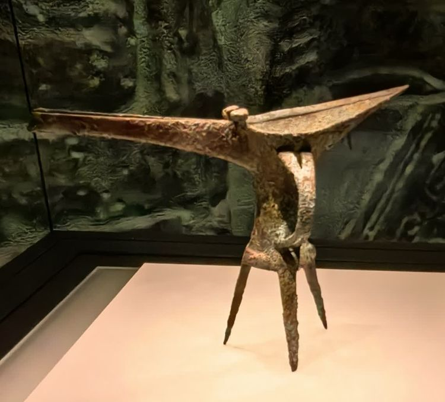
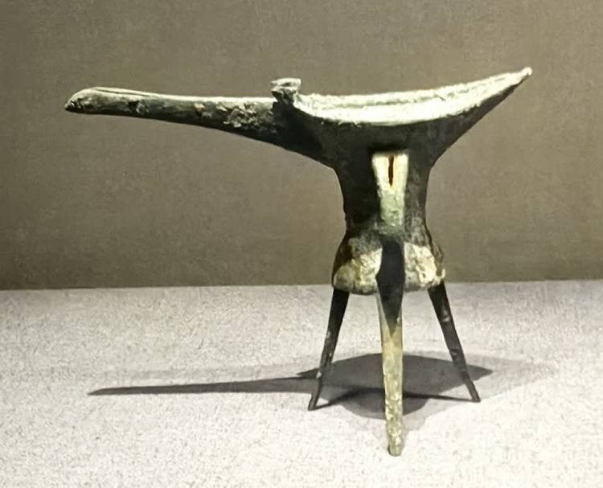

铜爵
- 铜爵，古代一种酒器。用于温酒和饮酒。相当于后世的酒杯。常见的形制为深腹，前面有倾酒用的流，后面有尾，旁有把手，口上有两柱，下面有三个尖的高足。
- 也有腹部微凸的；盖子作成兽头形的；腹下平底；两柱上端合而为一及方形四足的。器体较高，流尾间距离较长。束腰平底，裙边有四个圆形镂孔，下接外撇的三足。半环形〓，两端有长方形镂孔。
- 二里头文化铜爵是中国青铜文化中最早出现的青铜容器之一，也是最早的青铜酒器。二里头文化铜爵的发现，在中国古代酒文化史上具有重要意义。
- 从器物本身的铭文看，多自称尊彝、方彝、宗彝等，而没有自名为爵的。
- 把这种形状的器物定名为爵，自宋代开始。以商代的为最多，西周的较少，战国以后就不见有这种器物。西周以后不见，在这一千多年的岁月中，铜爵发挥着极为重要的作用，《博古图》精辟归纳道：“爵于彝器是为至微，然而礼天地、交鬼神、和宾客以及冠、昏、丧、祭、朝聘、乡射，无所不用，则其为设施也至广矣。”多年来的考古事实证明，铜爵是商代和西周青铜礼器中最常见和最基本的酒礼器。
- 此铜爵1984年出土于河南省偃师市二里头遗址第九号墓葬，口呈椭圆形，前有长流，后有短尾且上翘，在流与口连接处皆有两个矮柱。腹部断面呈椭圆形，下腹略鼓。腹部装有一鋬，下有三细高三棱实足。整器光素无纹。
- 
- 铜爵是中国青铜器中最具代表性的酒礼器，可以说是中国酒文化的代表，尤其是在商代，它是最典型、最常见和最基本的酒礼器，是当时等级、身份标志的青铜礼器组合的核心器（西周以后礼器组合的核心为铜鼎）。这一时期铜爵的这种特殊功能，来自于夏人已将铜爵作为特殊身份的标志。
- 在中国古代，“国之大事，在祀与戎”，青铜器主要是祭器和兵器。古人祭天地、交鬼神、宴宾客以及冠、昏、丧、祭、朝聘、乡社等，酒礼器无所不用，是当时重要的礼仪之具，所以，中国很早就出现了青铜酒具。从现今考古资料看，当华夏民族由原始部落进入文明社会，建立第一个国家时，就发明了这种形体独特、具有三足、杯形腹、一侧有握手的青铜爵。尔后，除继续使用外还新增加了、觯等酒器。商周时期器类明显增多，并新增加了大量的酒具如觚、卣、壶、 、尊、彝、觥等，但始终以爵、觚的组合为基础。
- 铜爵是一种有较深杯状腹的酒具，口沿有为倾倒酒液用的“长流”，后有呈尖状的短“尾”,流上近口沿处有两个“柱”，杯状腹的一侧有半环形握手“”，腹底有三个尖足，它是一种功能并不单一的酒具。我们不赞同铜爵是温酒器，也不赞同极流行的认识即为饮酒器，实际上商周时期除了觚、觯为饮酒器，卣、 、壶为盛酒器外，其他酒器如、爵的功用还是多方面的。
- 